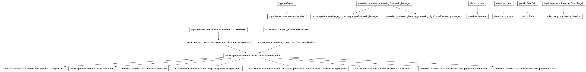

autowisp.crash_report module
Class Inheritance Diagram

Build a shareable, scrubbed crash report for a recorded error.
The report gathers everything needed to diagnose a failure – the error record and its sidecar, the relevant per-process logs, the configuration in effect, and environment provenance – into a single zip the user can hand to the maintainers.
Because logs and configuration can contain credentials (e.g. the Gaia archive user/password threaded through the process configuration), every text artifact is passed through the scrubbing helpers here before it enters the report. Scrubbing is mandatory: nothing is written unscrubbed.
- autowisp.crash_report.REDACTED = '***REDACTED***'
Replacement written in place of a redacted secret value.
- autowisp.crash_report._add_scrubbed_database(zip_file, manifest)[source]
Add a copy of the SQLite project database with secrets redacted.
- autowisp.crash_report._error_record(error_row, db_session)[source]
The inline error fields plus its run’s host/PID/code version.
- autowisp.crash_report._read_log_scrubbed(path, max_log_bytes)[source]
Return a log’s scrubbed text, head+tail truncated past the cap.
- autowisp.crash_report.build_crash_report(error_id, out_path=None, *, max_log_bytes=524288, db_session=None)[source]
Assemble a scrubbed crash-report zip for one error.
Collects the error record, its detail sidecar, the per-process logs for its run/step, a credential-scrubbed copy of the SQLite project database, and environment provenance, plus a
manifest.jsondescribing what was gathered. Every text artifact is scrubbed; the database is scrubbed in the copy. Read-only with respect to live pipeline state. Collection is best-effort: a source that cannot be read is noted as a gap in the manifest rather than failing the report.- Parameters:
error_id (int) – The error to report on.
out_path (str or Path or None) – Destination zip; defaults to
crash_report_error_<id>.zipin the current directory.max_log_bytes (int) – Per-log size cap; larger logs are head+tail truncated. Raise it for a more thorough (larger) report.
db_session – Optional active session; one is opened if omitted.
- Returns:
The path to the written zip.
- Return type:
Path
- Raises:
ValueError – If no error has the given id.
- autowisp.crash_report.collect_provenance()[source]
Return environment provenance for a crash report.
Captures the machine and software building the report – hostname, OS, Python and key package versions, code version, and the machine’s memory (the box’s RAM ceiling, for judging an OOM death). Uses the same
get_hostname/collect_environment/collect_resource_snapshothelpers the crash-time capture uses, so the report-time environment is directly comparable with the crash-time environment recorded in the sidecar – a difference between the two is the tell that packages were upgraded (or the box changed) between the failure and the report. The failed run’s own host / code version live on itsPipelineRunrow.- Returns:
Provenance fields, all JSON-serializable.
- Return type:
- autowisp.crash_report.find_error_progress(error_row, db_session=None)[source]
Return the processing-progress row an error belongs to, or None.
Resolves a step error to its processing record via run + step (and the image’s type, when the error names an image), so the BUI can link the error to the matching log-review page. Handles both image steps (
ImageProcessingProgress) and lightcurve steps (LightCurveProcessingProgress, which record in a different table); a step only writes one, so whichever has a row for the run+step wins. A pipeline/BUI error – or a step with no recorded progress – yieldsNonerather than a wrong match.- Parameters:
error_row – The
Errorrow.db_session – Optional active session; one is opened if omitted.
- Returns:
ImageProcessingProgress, LightCurveProcessingProgress, or None
- autowisp.crash_report.latest_error_id(db_session=None)[source]
Return the id of the most recently recorded error, or None.
- Parameters:
db_session – Optional active session; one is opened if omitted.
- Returns:
int or None
- autowisp.crash_report.scrub_config_values(db_session)[source]
Redact secret configuration values in a database, in place.
The project configuration stores credentials as ordinary rows (e.g. a
gaia-passwordparameter), which a binary database file or SQL dump cannot be text-scrubbed for. This redacts theConfigurationvalue of every parameter whose name names a secret.Intended for a copy of the project database destined for a crash report – never the live database – since it mutates the rows.
- Parameters:
db_session – A session connected to the database copy to scrub.
- Returns:
The number of configuration values redacted.
- Return type:
- autowisp.crash_report.scrub_mapping(mapping)[source]
Return a copy of
mappingwith secret-keyed values redacted.Recurses into nested dictionaries. A value is redacted when its key name matches a secret (e.g.
gaia_password,api_key); other values are copied through unchanged.
- autowisp.crash_report.scrub_text(text)[source]
Redact secret values from a blob of text (a log or config file).
Replaces the value of any
key: value/key = valueassignment whose key names a secret withREDACTED, leaving the key (and everything else) intact. Best-effort and never raises.
- autowisp.crash_report.select_error_logs(error_row, db_session=None)[source]
Return the per-process log files relevant to an error.
Reuses the pipeline’s own log-locating machinery (
ProcessingManager.find_processing_outputs, on whichever manager matches the resolved progress row), so the configuredlogging_fname/std_out_err_fnamenaming is honored rather than assumed. Only the logs for the error’s run and step are returned (the main-process log/outerr and the run’s worker logs), not the whole log directory. Best-effort: returns the existing files it finds, or an empty list.